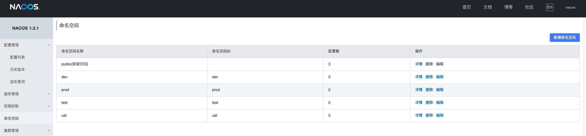

学习下Spring Cloud Alibaba
Spring Cloud Alibaba 致力于提供分布式应用服务开发的一站式解决方案。项目包含开发分布式应用服务的必需组件，方便开发者通过 Spring Cloud 编程模型轻松使用这些组件来开发分布式应用服务。
Nacos 作为注册中心
适配 Spring Cloud 服务注册与发现标准，默认集成了 Ribbon 的支持。

可作为配置中心、服务注册中心
Nacos 支持将注册中心(Service Registry）与配置中心(Config Center) 在一个进程合并部署或者将2者分离部署的两种模式。
Nacos REST 服务调用
服务提供者
添加依赖
<dependency>
<groupId>com.alibaba.cloud</groupId>
<artifactId>spring-cloud-starter-alibaba-nacos-discovery</artifactId>
<version>2.1.1.RELEASE</version>
</dependency>
修改配置
server:
port: 8070
spring:
application:
name: service-provider
cloud:
nacos:
discovery:
server-addr: 127.0.0.1:8848
编写测试 controller
@RestController
public class EchoController {
@RequestMapping(value = "/echo/{string}", method = RequestMethod.GET)
public String echo(@PathVariable String string) {
return "Hello Nacos222 Discovery " + string;
}
}
启动类上添加 @EnableDiscoveryClient
服务消费者
添加依赖
<dependency>
<groupId>org.springframework.cloud</groupId>
<artifactId>spring-cloud-starter-alibaba-nacos-discovery</artifactId>
<version>0.2.2.RELEASE</version>
<exclusions>
<exclusion>
<groupId>com.alibaba.nacos</groupId>
<artifactId>nacos-client</artifactId>
</exclusion>
</exclusions>
</dependency>
<dependency>
<groupId>com.alibaba.nacos</groupId>
<artifactId>nacos-client</artifactId>
<version>1.1.4</version>
</dependency>
修改配置
server:
port: 8071
spring:
application:
name: service-consumer
cloud:
nacos:
discovery:
server-addr: 127.0.0.1:8848
启动类上添加 @EnableDiscoveryClient
访问 http://127.0.0.1:8071/echo/123 服务可用
Nacos Dubbo
服务提供者
添加依赖
<dependency>
<groupId>org.apache.dubbo</groupId>
<artifactId>dubbo</artifactId>
<version>2.7.10</version>
</dependency>
<dependency>
<groupId>org.apache.dubbo</groupId>
<artifactId>dubbo-registry-nacos</artifactId>
<version>2.7.5</version>
</dependency>
<dependency>
<groupId>org.apache.dubbo</groupId>
<artifactId>dubbo-spring-boot-starter</artifactId>
<version>2.7.5</version>
</dependency>
修改配置
dubbo:
application:
name: nacos-provider
version: 1.0.0
registry:
address: nacos://127.0.0.1:8848
version: 1.0.0
启动类上添加 @EnableDubbo
服务消费者
添加依赖
与服务提供者依赖一致
修改配置
dubbo:
application:
name: nacos-consumer
version: 1.0.0
registry:
address: nacos://127.0.0.1:8848
version: 1.0.0
启动类上添加 @EnableDubbo
Nacos 作为配置中心
客户端
添加依赖
<dependency>
<groupId>com.alibaba.cloud</groupId>
<artifactId>spring-cloud-starter-alibaba-nacos-config</artifactId>
<version>2.1.1.RELEASE</version>
</dependency>
修改配置
新建配置文件 bootstrap.yml，配置文件要与 nacos 里配置的 Data ID 一致。
nacos 控制台上添加配置

Data ID 是 nacos-config2-dev.yml，所以在 bootstrap.yml 配置文件中这么配置
Data ID 与配置文件之间的联系 ${prefix}-${spring.profile.active}.${file-extension}
prefix 默认为 spring.application.name 的值，也可以通过配置项 spring.cloud.nacos.config.prefix来配置。
spring:
cloud:
nacos:
config:
server-addr: 127.0.0.1:8848
file-extension: yml
application:
name: nacos-config2
profiles:
active: dev
通过 controller 查看配置
@RestController
@RefreshScope
@RequestMapping("/config")
public class ConfigController {
@Value("${user.name}")
private String userName;
@Value("${user.age}")
private String userAge;
@RequestMapping("/get")
public String get() {
return "user.name = " + userName + " user.age = " + userAge;
}
}
http://127.0.0.1:8081/config/get
在 nacos 控制台中修改配置后，会同步刷新。
环境隔离
Nacos 文档中对命名空间的描述：
用于进行租户粒度的配置隔离。不同的命名空间下，可以存在相同的 Group 或 Data ID 的配置。Namespace 的常用场景之一是不同环境的配置的区分隔离，例如开发测试环境和生产环境的资源（如配置、服务）隔离等。
在命名空间页面中添加不同的空间。
